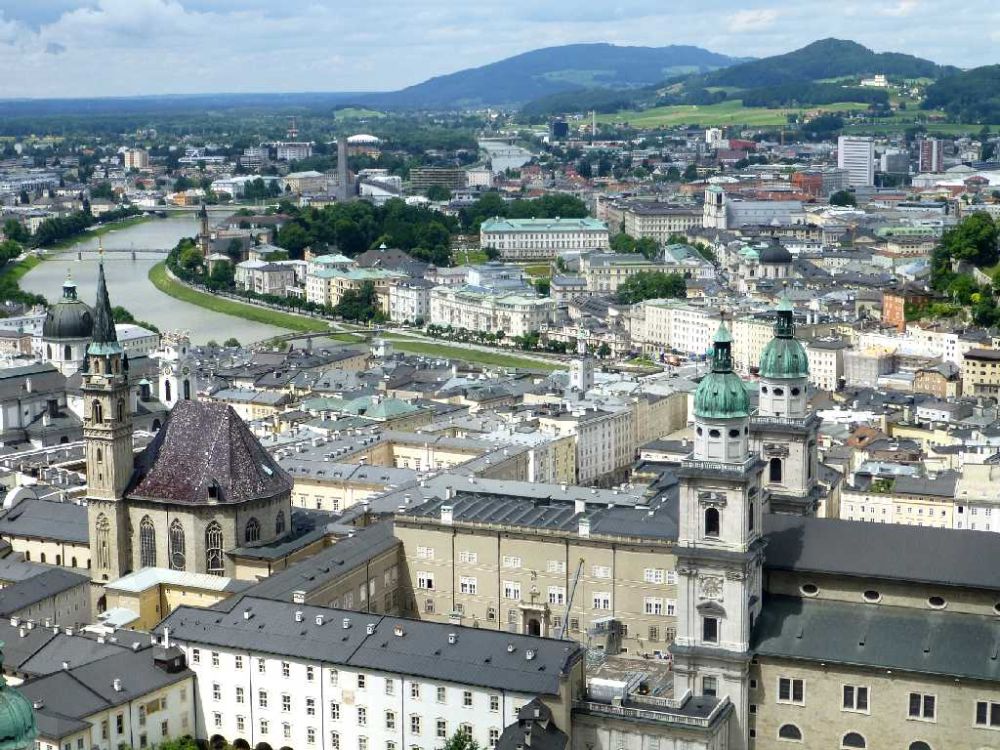
Salzburg
Salzは塩を意味しBurgは砦を意味し近郊の岩塩を製塩しザルツァハ川を利用して欧州各地に塩を供給した ホーエンザルツブルク城から旧市街とミラベル宮殿を望む
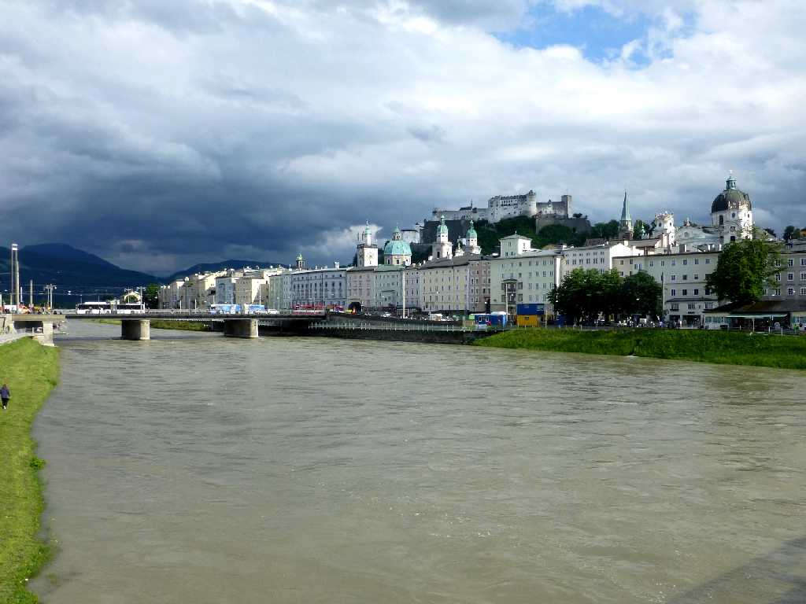
Festung Hohensalzburg Makartsteg Salzach Salzburg
ザルツァハ川に架かるマカルト小橋から 旧市街 ザルツブルク大聖堂 ホーエンザルツブルク城 を望む
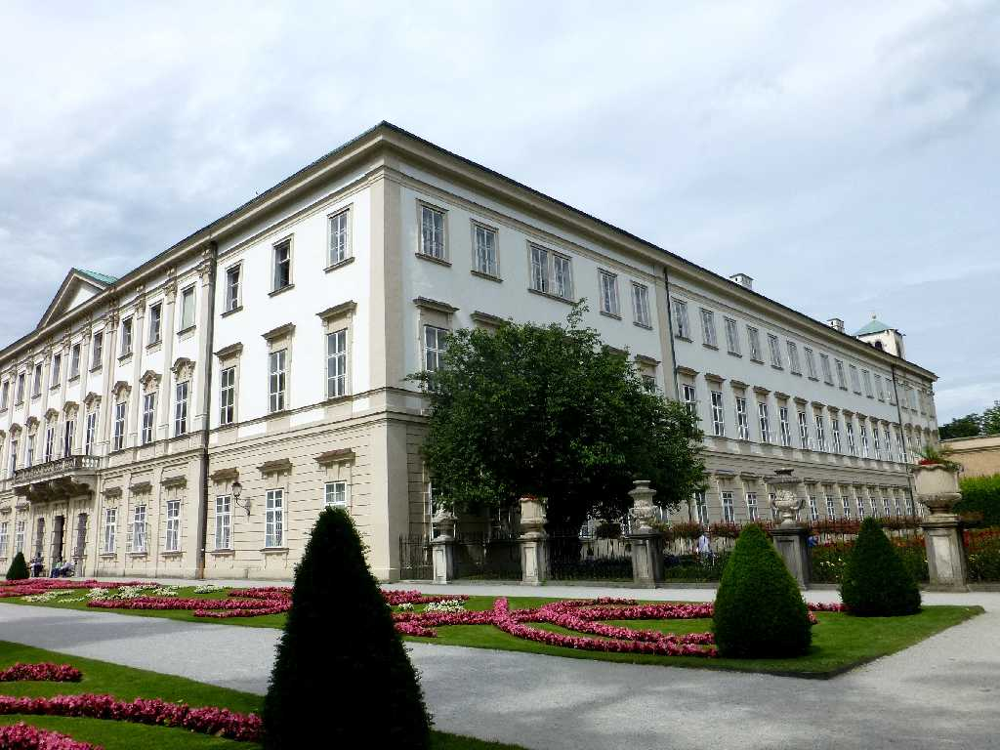
Schloß Mirabell Salzburg
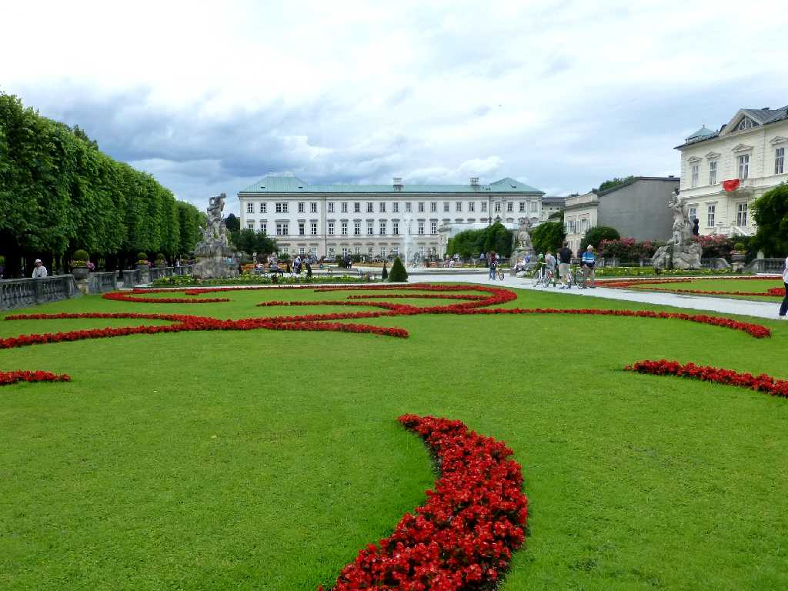
Mirabellgarten Salzburg
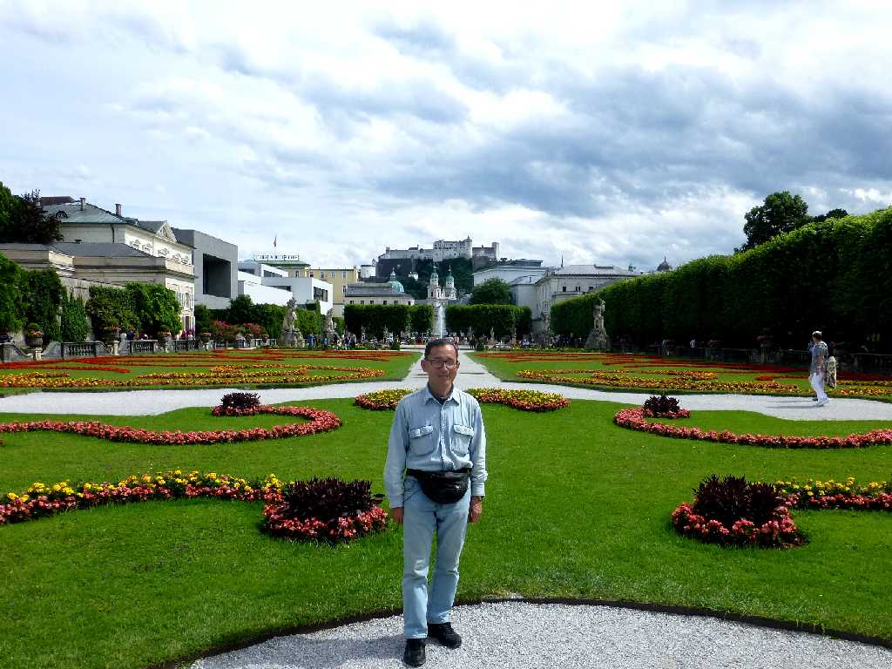
June 22 2015 Festung Hohensalzburg Mirabellgarten Salzburg
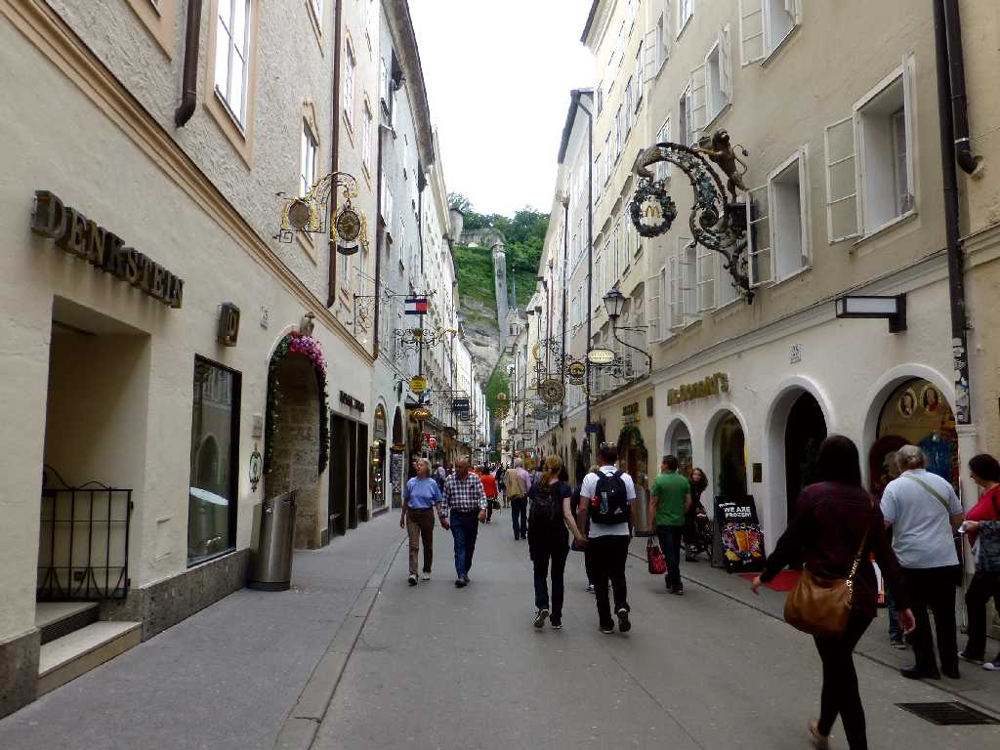
Getreidegaße Salzburg
ゲトライデ通りにはモーツアルトの生家やカフェモーツァルト等が並ぶ
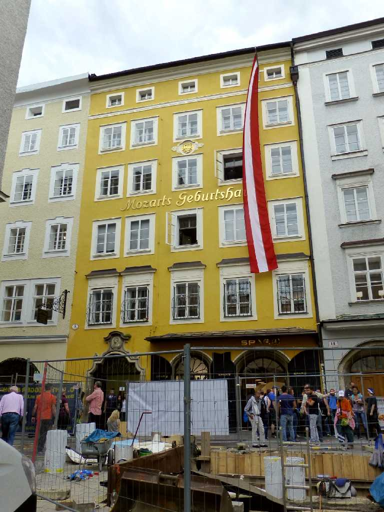 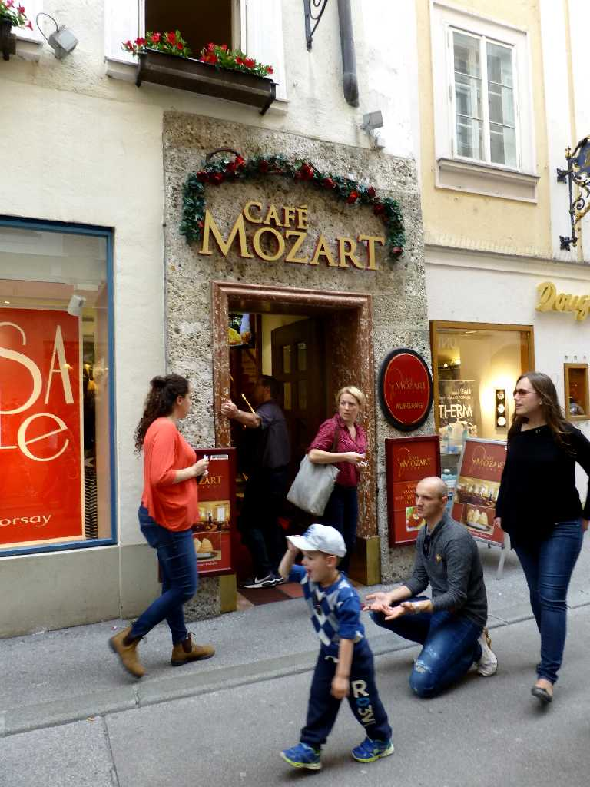
Mozarts Geburtshaus Getreidegaße Café Mozart
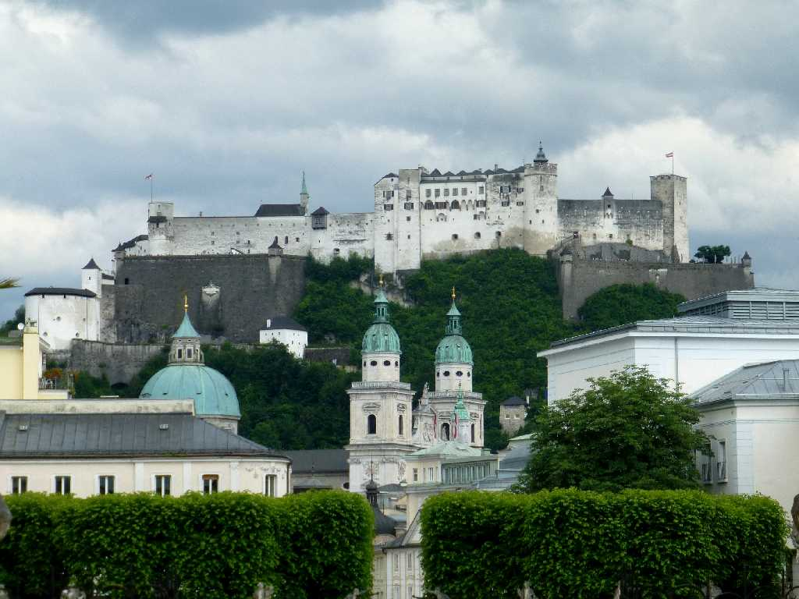
Festung Hohensalzburg Salzburg
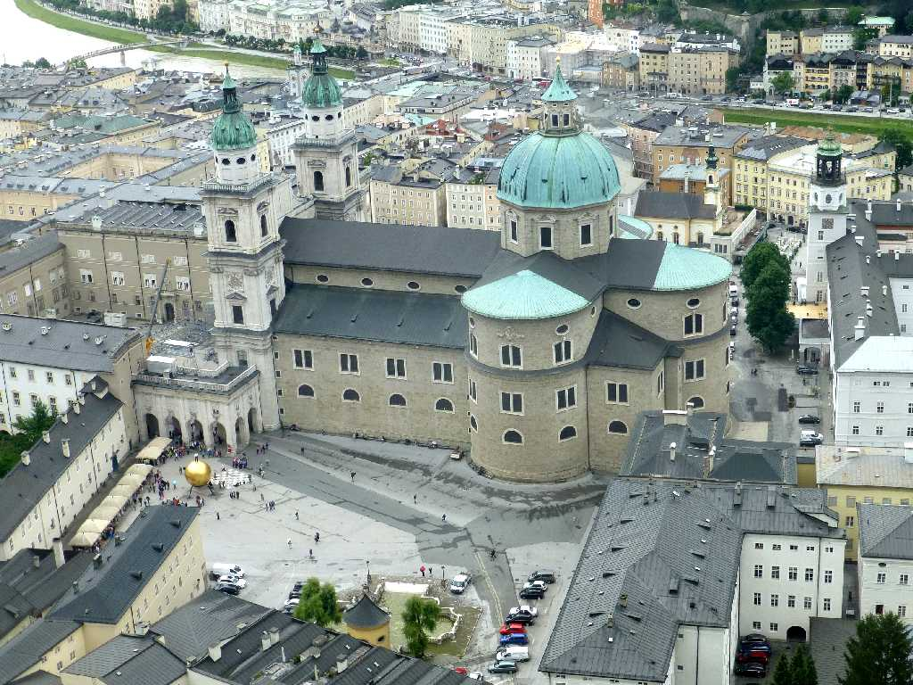
Salzburger Dom Salzburg
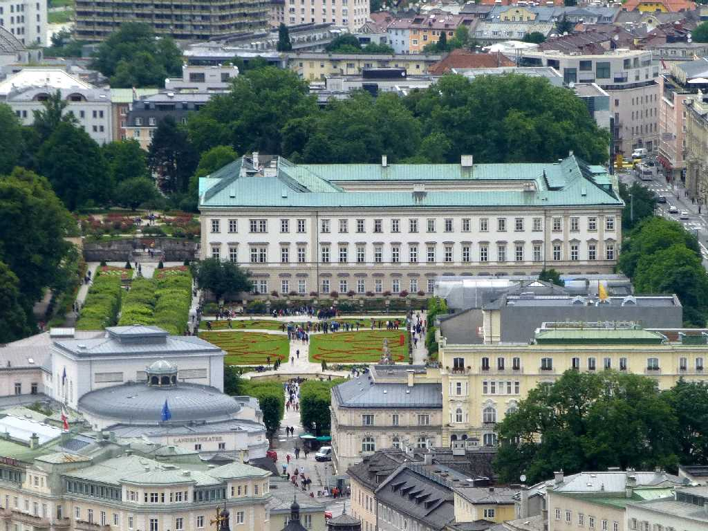
Schloß Mirabell Salzburg
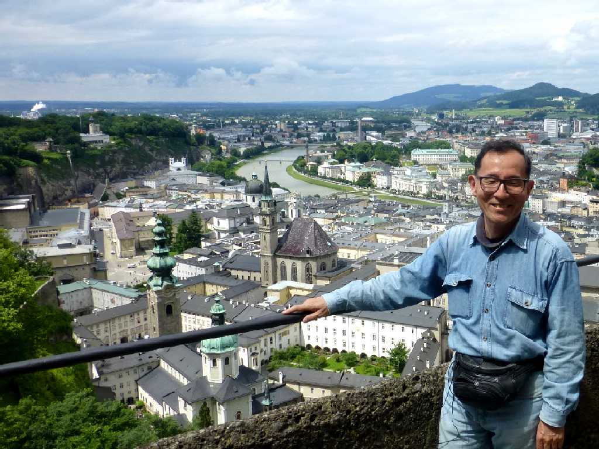
June 23 2015 Salzburg